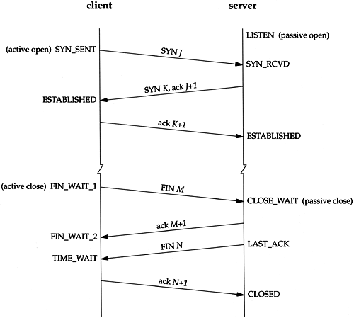

109.1 مبانی پروتکل های اینترنتی
وزن: 4
داوطلبان باید درک درستی از اصول شبکه TCP/IP نشان دهند.
حوزه های دانش کلیدی
- درک ماسک های شبکه و نماد CIDR را نشان دهید.
- آگاهی از تفاوتهای بین آدرسهای IP خصوصی و عمومی "چهار نقطهدار".
- دانش در مورد پورت ها و سرویس های رایج TCP و UDP (20، 21، 22، 23، 25، 53، 80، 110، 123، 139، 143، 161، 162، 389، 443، 465، 514، 465، 514، 80، 139، 143، 443، 465، 514، 593، 63، 20، 20، 13، 13، 13، 13، 13، 13، 13، 13، 13، 13، 13، 13، 13، 13، 13، 13، 13، 13، 13، 13، 13، 20، 13.
- دانش در مورد تفاوت ها و ویژگی های اصلی UDP، TCP و ICMP.
- آگاهی از تفاوت های عمده بین IPv4 و IPv6.
- آشنایی با ویژگی های اساسی IPv6.
شرایط و امکانات
/etc/services- IPv4، IPv6
- زیر شبکه
- TCP، UDP، ICMP
TCP/IP
پروتکل کنترل انتقال/پروتکل اینترنت (یا به طور خلاصه TCP/IP) پشته یا پروتکل هایی است که بیشترین قدرت ارتباطات را در اینترنت (و بسیاری از شبکه های دیگر) می دهد. اگرچه به طور کلی TCP نامیده می شود، اما شامل UDP، ICMP، DNS و بسیاری دیگر نیز می شود.
IP
پروتکل اینترنت یا IP راهی برای اشاره منطقی به هاست در اینترنت است. هنگامی که یک دستگاه دارای یک آدرس IP است، امکان ارسال داده به سمت آن وجود دارد. آدرسهای IP باید منحصربهفرد باشند تا شبکه بداند هر بسته به کجا میرود. 2 نسخه فعال از پروتکل IP وجود دارد. 4 و 6.
IPv4 به شکل A.B.C.D است که A، B، C و D بین 0-255 هستند. موارد زیر همه آدرس های IP معتبر هستند:
1.2.3.4
1.1.1.1
100.0.0.100
192.168.1.4
هر قسمت از یک آدرس IP را Octet می نامند زیرا از یک عدد 8 بیتی (0..255) ساخته شده است و می تواند به صورت دودویی یا هگزا یا هر نمادی نشان داده شود، اما فرمت اعشاری رایج تر است.
با توجه به اینکه هر اکتت می تواند بین 0 تا 255 باشد، در مجموع می توانیم 256 * 256 * 256 * 256 = 4294967296 آدرس IPv4 داشته باشیم. این حدود 4.3 میلیارد است - فقط! به همین دلیل است که ما به IPv6 تغییر می کنیم.
آی پی های خصوصی
آدرسهای IP باید در شبکه یکپارچه باشند، بنابراین افراد باید آدرسهای IP خود را از یک مرجع مرکزی به نام Internet Assigned Numbers Authority (IANA) دریافت کنند. آدرس های IP موجود در 3 کلاس گروه بندی می شوند:
| کلاس | اکتت اول | محدوده |
|---|---|---|
| A | 1-126 | 1.0.0.0 تا 126.255.255.255 |
| B | 128-191 | 128.0.0.0 تا 191.255.255.255 |
| ج | 192-223 | 192.0.0.0 تا 223.255.255.255 |
معمولاً اگر در حال ایجاد یک سرور در ارائه دهنده خدمات خود هستید، آن ارائه دهنده خدمات یک آدرس IP خریداری شده از IANA (از طریق ثبت منطقه ای کوچکتر) به شما می دهد. اما اگر بخواهید یک IP به لپ تاپ یا تلفن همراه تبلت خود داخل خانه خود اختصاص دهید، چه اتفاقی می افتد؟ این دستگاه ها به طور مستقیم در اینترنت قابل مشاهده نیستند و شما قرار نیست برای آنها IP خریداری کنید.
در اینجا محدوده آدرس IP خصوصی بازی می شود. محدودههای زیر آدرسهای «خصوصی» نامیده میشوند و هر کسی میتواند آنها را به هر دستگاهی که میخواهد اختصاص دهد، تا زمانی که در اینترنت باز قابل مشاهده نباشد.
| محدوده | تعداد IP های این محدوده |
|---|---|
| 192.168.0-255.0-255 | 65 هزار آی پی |
| 172.16-31.0-255.0-255 | 1M آی پی |
| 10.0-255.0-255.0-255 | 16 میلیون آی پی |
هر کسی می تواند از هر یک از این IP ها در دستگاه های خود استفاده کند تا زمانی که مستقیماً به اینترنت متصل نباشد. به این مثال نگاهی بیندازید:
XXXXXX
XXXXXX XXXXX XXX XX
+--------+ X XXXXX XXXXXX XX
+--------+172.16. | XX X
| |1.1 | X X
+--------+ | | X XX
|192.168.| +--------+ XXX Internet, Only XX
|2.100 | | +-----------------+ XXXXX uses Public XXXX
| | | | | XXX IP Addresses XX
+--------+ Private Network | NAT, Translates |Public IP XX X
| +-----------+ between Public +---------+X Devices with Private IPs XX
| | | and Private IPs | 87.3.91.4 XX reach the Internet via X
+--------+ +--------+ | | XX the Public IP configured XX
|192.168.| | | | | XXX on their NAT device. X
|2.200 | |172.16. | +-----------------+ XX XX
| | |1.2 | XXX X
+--------+ | | XX XX
+--------+ X XX
X XXX
XX XXX
XX XXXXXXX XXXXXXXXXX
XXXXXX XXXXXXX
در وسط می توانید یک دستگاه Network Address Translation یا NAT را ببینید. فقط با استفاده از یک IP عمومی (ممکن است 87.3.91.4 باشد) به اینترنت متصل است. در سمت چپ جعبه NAT، 4 دستگاه با IP خصوصی وجود دارد. هر بار که هر یک از این دستگاهها آدرسی را در اینترنت (IP عمومی\" هدف قرار میدهند، دستگاه NAT از IP عمومی خود برای درخواست آن IP استفاده میکند و وقتی پاسخ آماده شد، آن را به دستگاه Natted - دستگاهی که پشت NAT قرار دارد، ارائه میکند. به این ترتیب میتوانیم شبکههای عظیمی را پشت دستگاه NAT ایجاد کنیم. در این سناریو، همه دستگاه ها می توانند به اینترنت دسترسی پیدا کنند، اما هیچ کس از اینترنت نمی تواند مستقیماً به هیچ یک از آنها دسترسی پیدا کند. مگر اینکه یک DMZ را پیکربندی کرده باشیم.
زیر شبکه (و Netmask)
باشه! ما حدود 4B آدرس در IPv4 داریم. اما اگر بسته ای را به IP دیگری ارسال کنم چه اتفاقی می افتد؟ میگویید من سعی میکنم با استفاده از IP خصوصی آن، همانطور که در بخش قبل یاد گرفتید، سندی را روی چاپگر local چاپ کنم؟ چه کسی باید این بسته را گوش کند؟ آیا کل اینترنت آن را دست به دست می دهد؟ معلومه که نه! فقط شبکه local من باید بتواند آن بسته را دریافت کند و در این مورد خاص، فقط آنها چاپگر باید آن را در IP محلی خود دریافت کنند.
این با زیرشبکه به دست می آید. هدف از زیر شبکه ایجاد زیر-شبکهها در محدوده آدرس IP شماست. شما قبلاً این را بارها و بارها در مورد Netmask خود (255.255.255.0 معروف است) یا علامت CIDR آن که /24 است، دیده اید. بیایید نگاه عمیق تری داشته باشیم.
CIDR مخفف Classless Inter-Domain Routing است
وقتی در مورد شبکه صحبت می کنید، باید تصمیم بگیرید
- چند بیت از آدرس IP من قرار است بین همه دستگاه های من (شبکه) به اشتراک گذاشته شود
- چند بیت از آدرس IP من قرار است دستگاه های من را در این شبکه متمایز کند (میزبان)
به عنوان مثال، اگر 192.168.1.1 را به روتر خود اختصاص دهید و Netmask را روی /24 تنظیم کنید، 24 (بیت های دست چپ) از 192.168.1.1 را به عنوان شبکه خود ادعا می کنید (بنابراین 192.168.1. زیرا 24 = 8 * 3 بیتی شما) و اولین بیت شما). در این شبکه می توانید این IP ها را به دستگاه های خود اختصاص دهید: 192.168.1.10، 192.168.1.2، 192.168.1.200 و آنها یکدیگر را به درستی خواهند دید.
2 روش برای صحبت در مورد بیت های Netmask وجود دارد. روش CIDR /24 و روش Netmask اعشاری (255.255.255.0). در CIDR می گوییم چند بیت 1 هستند (بخش شبکه یک آدرس IP) و در روش اعشاری، این 1 بیت را در قالب آدرس IP نشان می دهیم. به جدول زیر دقت کنید:
| اعشاری | سیدر | باینری |
|---|---|---|
| 255.0.0.0 | /8 | 11111111.00000000.00000000.00000000 |
| 255.255.0.0 | /16 | 11111111.11111111.00000000.00000000 |
| 255.255.255.0 | /24 | 11111111.11111111.11111111.00000000 |
در جدول بالا من فقط موارد آسان را نشان می دهم ؛) اگر در امتحان CCNA شرکت می کنید، باید بتوانید بخش Network/Host را برای چیزی شبیه /13 محاسبه کنید. که اکنون که مفهوم آن را می دانید دشوار نیست.
هر زمان که هر بسته سعی می کند به هر IP در زیر شبکه (یعنی 192.168.1.0-255) برسد، روتر من بسته ها را به درستی به مقصد هدایت می کند. اما اگر هر دستگاهی سعی کند به چیزی از زیر شبکه من \ (مثلاً یک IP عمومی) دسترسی پیدا کند، روتر من از عملکرد NAT (یا روشهای دیگر) برای ارسال بستهها از طریق اینترنت (یا شبکه صحیح بر اساس جدول مسیریابی) استفاده میکند.
برای درک بهتر زیرشبکه، نگاهی به [سند سیسکو] (http://www.cisco.com/c/en/us/support/docs/ip/routing-information-protocol-rip/13788-3.html) بیندازید
آدرس شبکه و پخش
هنگام داشتن آدرس IP و Network Mask می توانیم آدرس شبکه و آدرس پخش را محاسبه کنیم.
آدرس شبکه یک AND منطقی بین آدرس IP و ماسک شبکه است. آدرس پخش، آدرس شبکه با یک OR منطقی است زمانی که همه بیت های میزبان به 1 تغییر می کنند.
گیج کننده... بله. چون صحبت در مورد ریاضی سخت است. فرض کنید آدرس IP ما 192.168.4.12 است و CIDR ما 24/ است (یعنی 255.255.255.0). اجازه می دهد تا آدرس شبکه و پخش را محاسبه کنیم. ipcalc یک ابزار مفید که می توانید استفاده کنید.
IP: 11000000.10101000.00000100.00001100 (192.168.4.12)
Netmask: 11111111.11111111.11111111.00000000 (255.255.255.0)
Network: 11000000.10101000.00000100.00000000 (192.168.4.0)
Broadcast: 11000000.10101000.00000100.11111111 (192.168.4.255)
تبدیل باینری به اعشاری
احتمالاً با پایه باینری آشنا هستید - این پایه هر چیزی است که به رایانه مربوط می شود. اگر نه، من به شما توصیه می کنم که یک جستجو در گوگل انجام دهید و آن را از منبع دیگری مطالعه کنید، زیرا این کتاب فرض می کند که شما قبلاً آن را می دانید. به طور خلاصه هنگام نوشتن اعداد در فرمت باینری (پایه 2)، تنها ارقام مورد استفاده 0 و 1 هستند. یک راه آسان برای تبدیل استفاده از جدول زیر برای تبدیل 0 و 1 به فرمت اعشاری normal ما است. برای دانستن ارزش هر بیت و جمع کردن آنهایی که 1 در آنها وجود دارد کافی است.
| 128 | 64 | 32 | 16 | 8 | 4 | 2 | 1 | اعشاری |
|---|---|---|---|---|---|---|---|---|
| 0 | 0 | 0 | 0 | 0 | 0 | 0 | 0 | 0 |
| 1 | 0 | 0 | 0 | 0 | 0 | 0 | 0 | 128 |
| 1 | 0 | 0 | 0 | 0 | 0 | 0 | 1 | 129 |
| 0 | 0 | 1 | 0 | 0 | 0 | 0 | 0 | 32 |
| 1 | 0 | 0 | 0 | 0 | 1 | 0 | 0 | 132 |
| 0 | 0 | 0 | 0 | 0 | 1 | 1 | 0 | 6 |
| 1 | 0 | 1 | 1 | 0 | 0 | 1 | 1 | 179 |
| 1 | 1 | 1 | 1 | 1 | 1 | 1 | 1 | 255 |
بنابراین 11000000.10101000.00000001.00001111 برابر است با 192.168.1.15.
پروتکل های ارتباطی
هنگامی که رایانه ها با هم ارتباط برقرار می کنند، از پروتکل ها استفاده می کنند. این پروتکلها به گونهای طراحی شدهاند که به رایانهها اجازه میدهند به روشهای مختلف برای برآوردن نیازهای مختلف صحبت کنند. در اینجا ما نگاهی به سه پروتکل محبوب در اینترنت خواهیم داشت: TCP / UDP / ICMP.
TCP
پروتکل کنترل انتقال یا TCP برای اطمینان از اینکه هر دو طرف بدون از دست دادن هیچ اطلاعاتی با یکدیگر صحبت می کنند طراحی شده است. در این پروتکل، گیرنده هر چیزی را که فرستنده ارسال می کند، دقیقاً همانطور که ارسال می کند، دریافت می کند. زمانی که برنامه ای را از اینترنت دانلود می کنید، TCP بهترین گزینه است زیرا باید فایل را دقیقاً همانطور که روی سرور ذخیره می شود دانلود کنید. ارتباط TCP به شکل زیر است:
A- Are you ready?
B- Yes
A- Please share with me the file XYZ
B- Ok. Are you ready?
A- Yes. Start sending
B- OK. This is the part 1 of XYZ
A- OK I got it based on these criteria?
B- Good. Now is it correct?
A- Yes. Please send the second part
B- OK. Are you ready for the second part?
A- Yes.
B- Here comes the second part
A- ...
B- ...

همانطور که می بینید، TCP به ارتباطات زیادی نیاز دارد و زمان صرف می کند (یا حتی داده ها را دوباره ارسال می کند) تا مطمئن شود گیرنده داده های دقیق موجود در سرور را دریافت می کند. عجیب است که در برخی موارد این چیزی نیست که ما به دنبال آن هستیم. اگر در حال تماشای فیلم یا تماس تلفنی هستید یا از جریان بازی لذت می برید، ترجیح می دهید در صورت بروز مشکل 1s در شبکه خود، به تماشای زنده ادامه دهید. به همین دلیل است که ما UDP را نیز داریم.
UDP
شما در حال چت تصویری با یک دوست هستید و شبکه در نوسان است. کدام انتخاب بهتر است؟ الف) ارسال مجدد بسته های گم شده و/یا برقراری مجدد اتصال و ادامه کل مکالمه با تاخیر 2 ثانیه یا ... ب) فقط بستههای جدیدتری را که دریافت کردهایم نشان دهیم و کنفرانس ویدئویی زنده را ادامه دهیم و فقط آن نوسان 2 ثانیه (دادههای از دست رفته) را فراموش کنیم؟ اگر انتخاب شما B است، بهتر است از UDP (User Datagram Protocol) برای برنامه چت خود استفاده کنید. UDP کمتر قابل اعتماد است: فرستنده بسته ها را بدون ارتباط زیاد ارسال می کند و از گیرنده می شنود و گیرنده بسته ها را بدون مذاکره با جزئیات دقیق با فرستنده گوش می دهد. این بسیار سریعتر از TCP است اما نمی توانید مطمئن باشید که 100٪ بسته ها توسط طرف B دریافت می شود.
ICMP
پروتکل پیام رسانی کنترل اینترنت یا ICMP یک پروتکل هدف خاص است که برای بررسی اتصال سرورها با دستور ping استفاده می شود. اولین کامپیوتر فقط می گوید "آنجا هستی؟" و دومی پاسخ خواهد داد "بله من اینجا هستم". به این مثال کاربردی نگاه کنید:
[jadi@funlife ~]$ ping google.com
PING google.com (173.194.32.135) 56(84) bytes of data.
64 bytes from 173.194.32.135: icmp_seq=1 ttl=48 time=239 ms
64 bytes from 173.194.32.135: icmp_seq=2 ttl=48 time=236 ms
^C
--- google.com ping statistics ---
2 packets transmitted, 2 received, 0% packet loss, time 1001ms
rtt min/avg/max/mdev = 236.707/238.174/239.642/1.546 ms
همانطور که می بینید، ما در حال پینگ (ارسال بسته های ICMP) به یک سرور هستیم و پاسخ می دهد (پاسخ به بسته های ICMP ما).
ICMP برای عیب یابی شبکه استفاده می شود و داده های کاربر را منتقل نمی کند
بندر
هر کامپیوتری یک آدرس دارد اما برنامه های زیادی روی آن کامپیوتر اجرا می شود. با استفاده از یک آدرس IP می توانید مقصد بسته های خود را به اینترنت بگویید، اما چگونه می توانید تصمیم بگیرید که کدام برنامه در آن رایانه باید به بسته شما پاسخ دهد؟ ما می دانیم که رایانه ای با آدرس 5.1.23.1 دارای یک وب سرور و یک سرور ftp است، اما چگونه می توانیم به آن دسترسی پیدا کنیم و به آن بگوییم "I want the index.html وب سرور شما" یا "فایل XYZ را از سرور FTP خود به من تحویل دهید"؟ این کار با استفاده از پورت ها انجام می شود. پورت ها اعدادی هستند که یک برنامه به آنها گوش می دهد. به عنوان مثال پورت 80 برای وب سرورها رزرو شده است، بنابراین اگر به 5.1.23.1:80 متصل شوم مطمئن هستم که با وب سرور صحبت می کنم. به همین ترتیب، هنگامی که پروتکل انتقال فایل (FTP) شروع می شود، شروع به گوش دادن در پورت 20 و 21 می کند و اگر از یک سرویس گیرنده FTP برای دسترسی به آن رایانه استفاده کنم، به طور خودکار به پورت 21 که برای FTP رزرو شده است متصل می شوم.
پورت های مختلف می توانند از پروتکل های انتقال مختلف (UDP یا TCP) استفاده کنند. پورت پیش فرض برخی از پروتکل ها به شرح زیر است. اینها بسیار مهم هستند و اکثر ادمین ها آنها را می شناسند.
| بندر | استفاده |
|---|---|
| 20، 21 | FTP (یک داده، یک کنترل) |
| 22 | SSH |
| 23 | شبکه راه دور |
| 25 | SMTP |
| 53 | DNS |
| 80 | HTTP |
| 110 | POP3 |
| 123 | NTP |
| 139 | نت بایوس |
| 143 | IMAP |
| 161, 162 | SNMP |
| 389 | LDAP |
| 443 | HTTPS |
| 465 | SMTPS |
| 636 | LDAPS |
| 993 | IMAPS |
| 995 | POP3S |
توجه داشته باشید که در این جدول تمام پورت های بالای 400 به S ختم می شوند که مخفف Secure است.
می توانید همه پورت های بالا و بسیاری از پورت های دیگر را در /etc/services بیابید
IPv6
دیدیم که فقط حدود 4B IPv4 در دسترس است. فقط در نظر بگیرید که ما حدود 7 میلیارد نفر در سیاره زمین هستیم، بنابراین حتی IP کافی برای هر فردی که در محدوده IPv4 است وجود ندارد. به این موارد جدیدترین خواسته های همه تلفن های همراه، ماشین ها، یخچال ها، ساعت ها، تلویزیون ها، دوربین ها و ... را اضافه کنید! همه آنها می خواهند در اینترنت باشند. به این می گویند اینترنت اشیا. چه باید کرد؟ ما یک راه حل به نام NAT دیدیم اما راه حل دائمی نسخه جدیدی از IP است. IP نسخه 6. در نسخه 6 IP ها دیگر محدود به 4 octet نیست.
هر IPv6 دارای 128 بیت است. آنها در گروه های 8، 16 بیتی گروه بندی می شوند و معمولاً در قالب Hex (پایه 16) نوشته می شوند. یک آدرس IPv6 نمونه شبیه 2001:0db8:0a0b:12f0:0000:0000:0000:0001 است و می توان آن را به 2001:db8:a0b:12f0::1 کوتاه کرد. در اینجا اعداد اعشاری از 0000 تا FFFF و 8 داریم که با : از هم جدا شده اند.
IPv6 حدود 3.4*(10^38) IP را در اختیار ما قرار می دهد که برای هر چیزی که در حال حاضر می توانیم تصور کنیم کافی است. فقط تصور کنید که می تواند 2^52 آدرس برای هر ستاره قابل مشاهده در جهان شناخته شده اختصاص دهد.